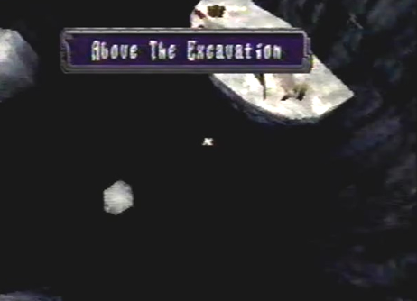
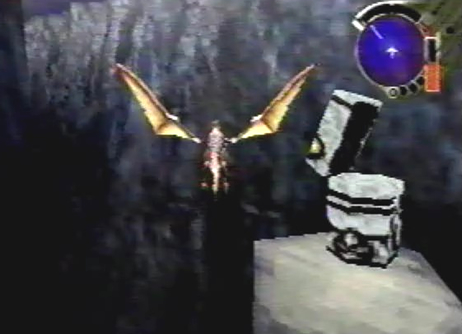

Enemies
Encountered/None |
|
Diary Entry 2: Above the Excavation Site A Sigh of Relief After escaping the Underground Ruins, the dragon and I found ourselves above the Excavation Site.This place was paradise compared to the monster infested underground ruins. As we made our way through the site, not one enemy was encountered. I still can't believe I'm ridding on an Ancient Age dragon! I wondered how I would get him to listen to me? I made it my top priority to get back to the dig site as soon as possible. I had a bad feeling that my Captain's life was fading. |
|
| Divine
Overview |
 1. No enemy encounters will occur in this place so just relax and sit back for the ride. |
2. After a short distance, the path will split, make sure to explore both routes. |
 3. Make sure to get the Feild Map, this will fill in your entire map. |
4. Make sure to lock-on to the hanging boxes multiple times until you get the items inside. Sometimes there will be no items and birds will fly out. |
5. Save your game at the save device. |
6. At the far end of the (Above Excavation Site) is the exit, your next destination is the Excavation Site. |